Diese Anleitung zeigt Schritt für Schritt, wo ihr im Admin was ändert: Texte, Bilder, Banner, Menüs, Hinweise, Weiterleitungen und alles, was Google sieht. Vorkenntnisse braucht ihr keine.
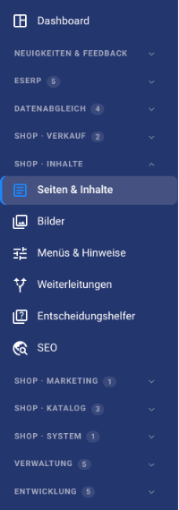
Die Artikeldaten kommen wie bisher aus der JTL-Wawi. Der Admin ergänzt alles, was die Wawi nicht kennt. Die Nummern im Bild gehören zur Tabelle darunter.
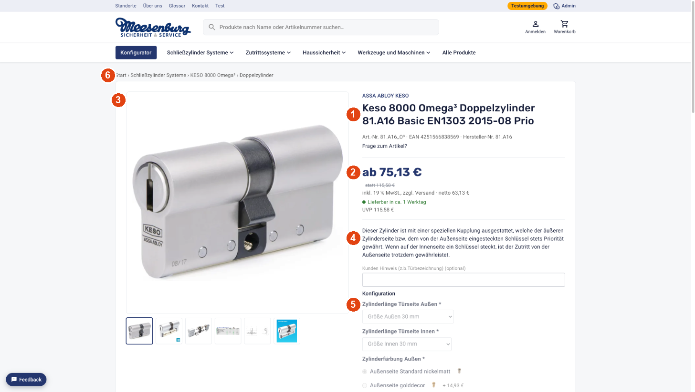
| Was | Wo ändern | Hinweis | |
|---|---|---|---|
| 1 | Artikelname, Hersteller, Artikelnummer, EAN | Wawi | Wird beim nächsten Abgleich übernommen. |
| 2 | Preise, Sonderpreise, Staffelpreise | Wawi | |
| 3 | Artikelbilder und deren Reihenfolge | Wawi (Shop-Kanal) | Im Admin: einzelne Bilder aus- und einblenden, Alt-Text ändern (Kapitel 3). |
| 4 | Kurz- und Langbeschreibung, Merkmale („Technische Daten“) | Wawi | |
| 5 | Variationen und Konfiguration (Längen, Farben, Schlüssel) | Wawi | |
| 6 | Kategorien und deren Reihenfolge | Wawi | |
| Titel und Beschreibung für Google (SEO) von Artikeln und Kategorien | Wawi | Der Admin zeigt sie an. Bearbeiten im Admin kommt, sobald die Wawi-Schnittstelle Schreibrechte hat. | |
| Zusätzliche Texte, Banner, Tabellen, Fragen & Antworten auf einer Artikel- oder Kategorieseite | Admin | Seiten & Inhalte (Kapitel 4) | |
| Startseite, eigene Seiten (z. B. „Über uns“) | Admin | Seiten & Inhalte (Kapitel 4) | |
| Überschrift auf der Seite, Google-Steuerung, Downloads ein/aus, Nachfolgeartikel | Admin | SEO (Kapitel 3) | |
| Menüs, Hinweisleiste, Fußzeile, Wartung | Admin | Menüs & Hinweise (Kapitel 6) |
Beispiel: Keso 8000 Omega³ Doppelzylinder 81.A16 Basic EN1303 2015-08 Prio.
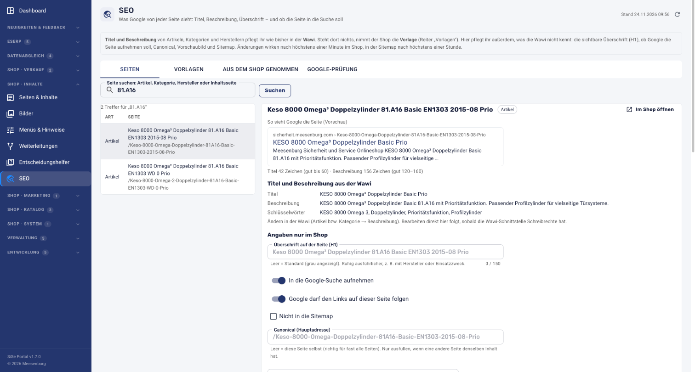
Oben seht ihr, wie Google die Seite zeigt (Vorschau mit Zeichenzählern), und Titel, Beschreibung und Schlüsselwörter aus der Wawi. Mit „Im Shop öffnen“ seht ihr die Seite direkt im Shop.
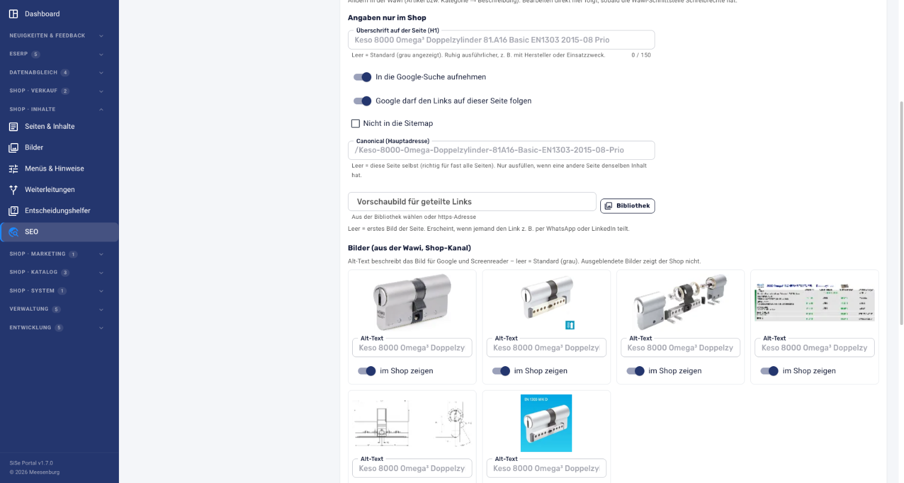
| Feld | Wofür |
|---|---|
| Überschrift auf der Seite (H1) | Die große Überschrift auf der Artikelseite. Leer = Artikelname (grau angezeigt). Gern ausführlicher, z. B. mit Hersteller oder Einsatzzweck. |
| In die Google-Suche aufnehmen | Aus = Google zeigt die Seite nicht in den Suchergebnissen („noindex“). Normalerweise an lassen. |
| Google darf den Links folgen | Normalerweise an lassen. |
| Nicht in die Sitemap | Nur für Seiten, die Google nicht kennen soll. |
| Canonical (Hauptadresse) | Leer lassen. Nur ausfüllen, wenn eine andere Seite denselben Inhalt hat – dann deren Adresse. |
| Vorschaubild für geteilte Links | Bild, das z. B. bei WhatsApp oder LinkedIn erscheint. Leer = erstes Artikelbild. |
| Bilder: Alt-Text | Beschreibt das Bild für Google und für blinde Menschen. Leer = Artikelname. |
| Bilder: im Shop zeigen | Aus = das Bild erscheint im Shop nicht (in der Wawi bleibt es). |
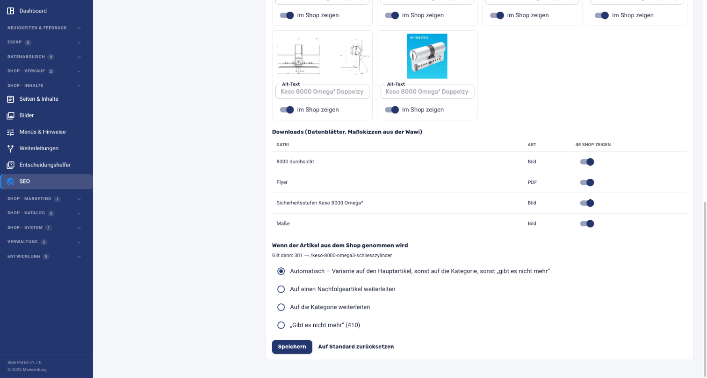
Unter Shop · Inhalte → Seiten & Inhalte stehen alle Inhalte: eigene Seiten, die Startseite und Zusätze auf Kategorie- und Artikelseiten. Oben seht ihr, wie viele veröffentlicht sind, nur als Entwurf existieren oder geplant sind. Mit dem Suchfeld und „Stelle“ filtert ihr die Liste.
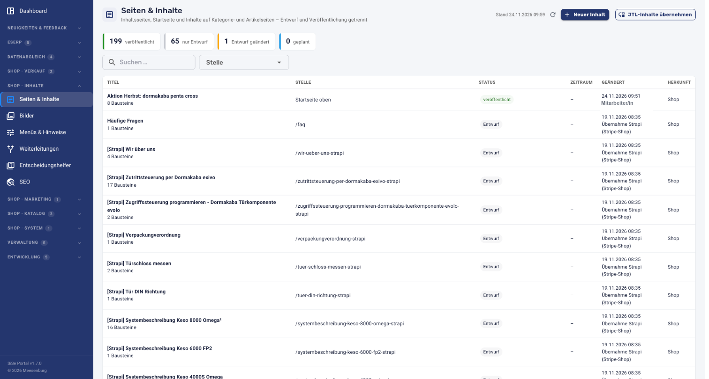
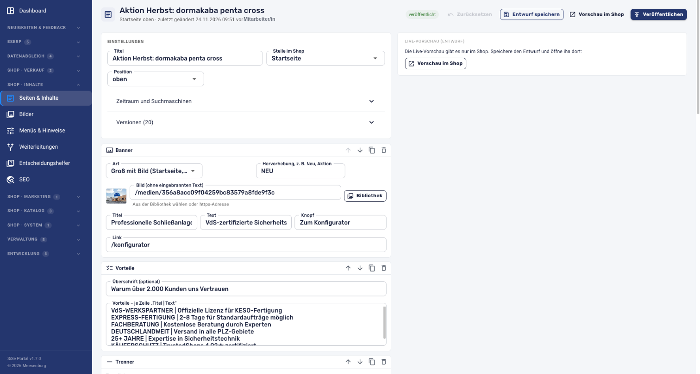
Ein Inhalt besteht aus Bausteinen, die untereinander stehen. Mit den Pfeilen rechts oben an jedem Baustein ändert ihr die Reihenfolge, mit dem Doppel-Symbol kopiert ihr ihn, mit dem Papierkorb löscht ihr ihn.
Unter „Zeitraum und Suchmaschinen“ legt ihr fest, ab wann und bis wann der Inhalt erscheint (z. B. für Aktionen), und bei eigenen Seiten Titel und Beschreibung für Google. Unter „Versionen“ holt ihr einen früheren Stand zurück.
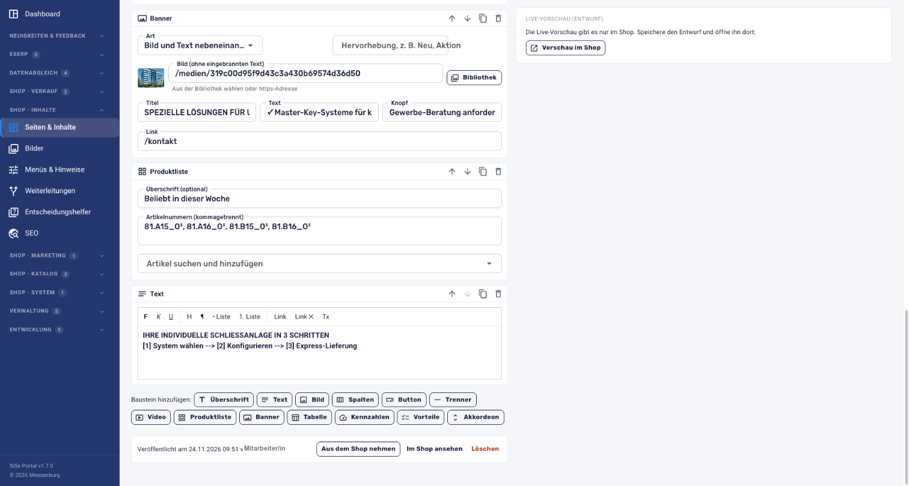
Ganz unten fügt ihr neue Bausteine hinzu:
| Baustein | Wofür |
|---|---|
| Überschrift | Zwischenüberschrift (für Google wichtig – lieber eine Überschrift als fett gedruckter Text) |
| Text | Fließtext mit fett, kursiv, Listen und Links |
| Bild | Ein Bild aus der Bibliothek, mit Alt-Text und optional Link |
| Spalten | 2 bis 4 Spalten nebeneinander, jede mit eigenen Bausteinen |
| Button | Knopf mit Link, z. B. „Zum Konfigurator“ |
| Trenner | Waagerechte Linie |
| Video | YouTube- oder Vimeo-Link |
| Produktliste | Artikel per Artikelnummer oder Suche, erscheinen als Karten mit Preis |
| Banner | Großes Bild mit Text und Knopf (Startseite, Aktionen) |
| Tabelle | Je Zeile „A | B | C“, erste Zeile ist die Kopfzeile |
| Kennzahlen / Vorteile | Kästen mit Zahl oder Titel und kurzem Text |
| Akkordeon | Aufklappbare Abschnitte – ideal für häufige Fragen; Google erkennt sie als „Fragen & Antworten“ |
Shop · Inhalte → Bilder ist eure Bildbibliothek für Banner, Bild-Bausteine und Vorschaubilder. Zieht Bilder in das Feld oben oder klickt darauf (JPEG, PNG, WebP oder GIF, bis 8 MB). Der Shop verkleinert die Bilder automatisch für Handy und Bildschirm.
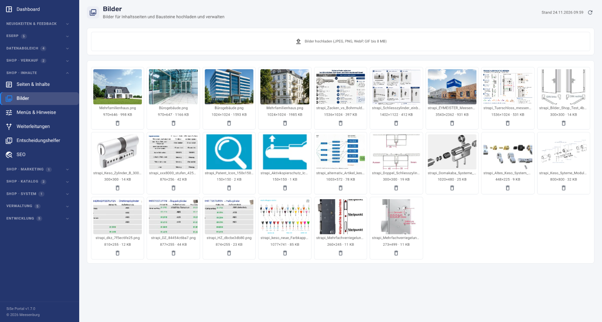
Shop · Inhalte → Menüs & Hinweise. Hier ändert ihr alles, was auf jeder Seite steht. Oben rechts Speichern nicht vergessen.
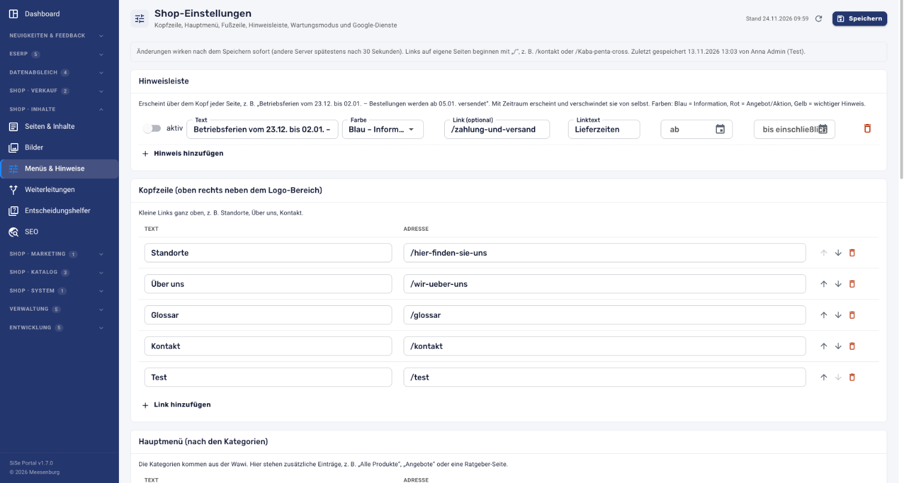
| Bereich | Was ihr hier macht |
|---|---|
| Hinweisleiste | Streifen über dem Kopf jeder Seite, z. B. Betriebsferien. Mit „ab“/„bis“ erscheint und verschwindet er von selbst. Blau = Information, Rot = Aktion, Gelb = wichtig. |
| Kopfzeile | Kleine Links ganz oben (Standorte, Über uns, Kontakt). |
| Hauptmenü | Einträge nach den Kategorien, z. B. „Alle Produkte“. Die Kategorien selbst kommen aus der Wawi. |
| Fußzeile | Links unten. Impressum, Datenschutz, AGB und Widerrufsrecht müssen drin bleiben. |
| Wartungsmodus | Kunden sehen nur euren Text; ihr seht den Shop weiter normal. Für Umbauten oder Störungen. |
| Google-Dienste | Google-Analytics- und Google-Ads-Kennung. Danach erscheint für Kunden automatisch die Cookie-Abfrage. |
Links auf eigene Seiten beginnen mit „/“, z. B. /kontakt.
SEO → Reiter Vorlagen. Hat ein Artikel in der Wawi keinen eigenen SEO-Titel, baut der Shop ihn nach dieser Vorlage. Platzhalter in geschweiften Klammern werden ersetzt, z. B. {Name} – {Marke} | Meesenburg. Darunter seht ihr jeweils ein Beispiel.
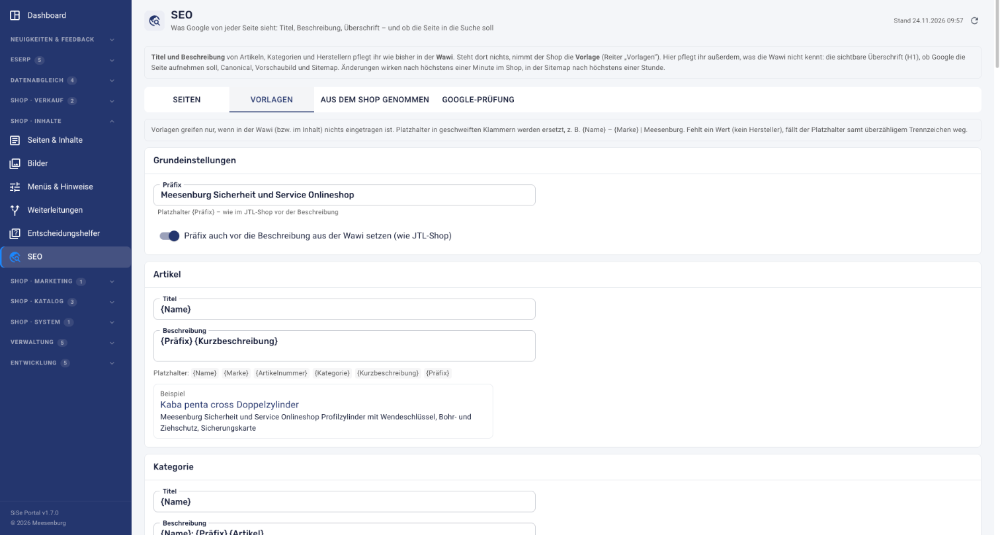
Weiter unten auf derselben Seite:
SEO → Reiter Aus dem Shop genommen zeigt Artikel der letzten 90 Tage, die nicht mehr im Shop sind, und alte Kategorien. In der Spalte „Gilt gerade“ steht, was Besucher bekommen: eine Weiterleitung (301) auf eine andere Seite oder „gibt es nicht mehr“ (410).
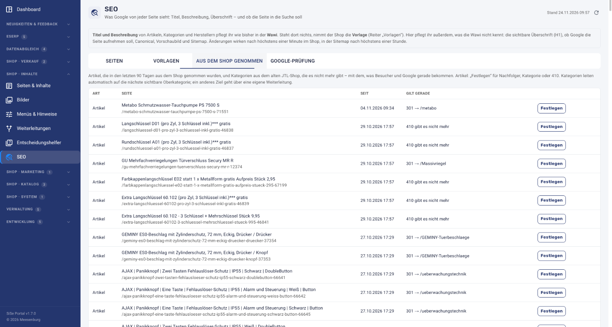
Mit Festlegen wählt ihr für einen Artikel einen Nachfolger, die Kategorie oder „gibt es nicht mehr“. Faustregel: Gibt es einen passenden Ersatz, leitet dorthin weiter – so bleiben Google-Platzierung und Links erhalten.
Der Reiter Google-Prüfung prüft von außen, ob Google den Shop lesen darf. Solange der Shop im Testbetrieb ist, steht dort „gesperrt“ – das ist richtig. Beim Livegang muss dort alles grün sein.
Shop · Inhalte → Weiterleitungen. Eine Weiterleitung schickt Besucher und Google von einer alten Adresse auf eine neue.
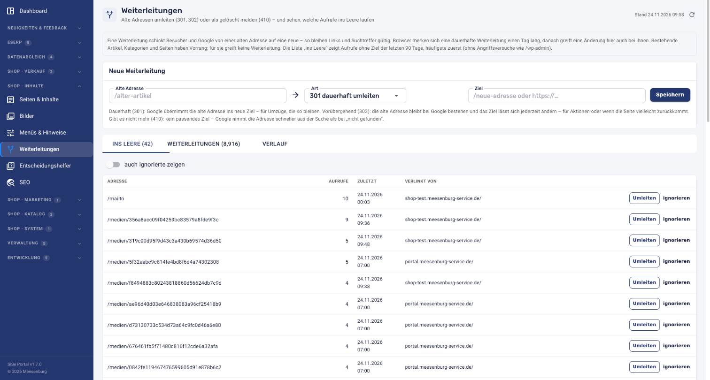
Ansprechpartner IT: Michael Piper. Diese Anleitung beschreibt die Testversion vom 24.11.2026; einzelne Bildschirme können sich bis zum Livegang noch ändern.